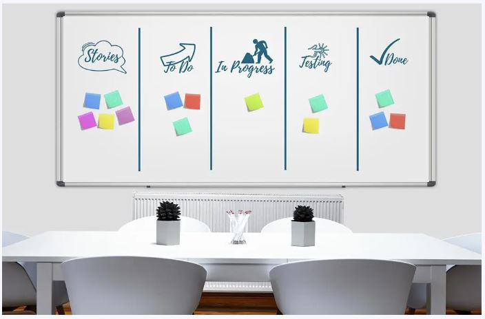
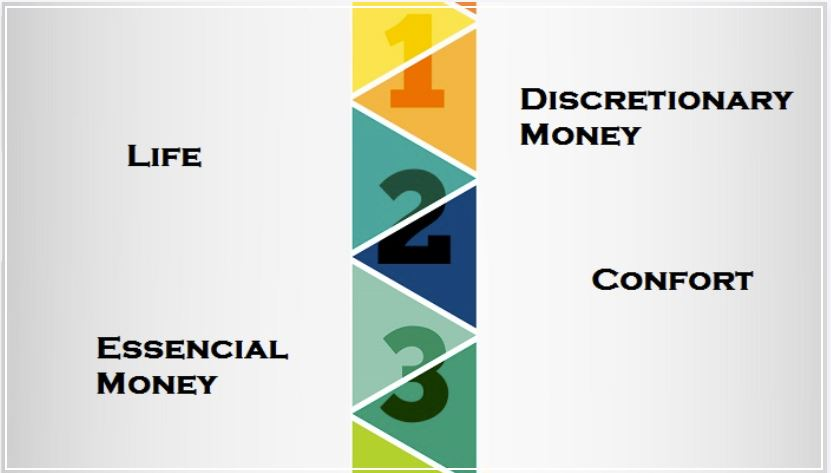
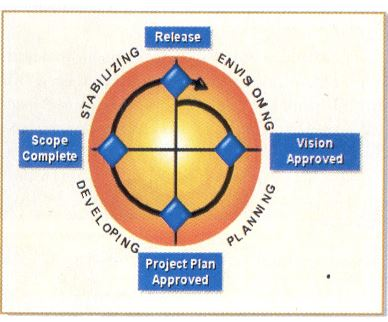

| Nome | RA |
|---|---|
| Kenji Sousa | 00255114 |
| Rafael Miranda | 00252248 |
| Willian Fedel | 00249931 |
A metodologia ágil XP é amplamente utilizada para o desenvolvimento de software de maneira eficiente e eficaz. Ela é baseada em princípios e valores que visam promover a colaboração, a comunicação e a entrega contínua de valor ao cliente. Neste artigo, vamos explorar as diferentes fases da metodologia ágil XP e como elas contribuem para um desenvolvimento eficiente.
O planejamento do projeto é a primeira fase da metodologia ágil XP. Nesta etapa, a equipe de desenvolvimento, juntamente com os stakeholders, define o escopo do projeto e identifica as funcionalidades que serão entregues em cada iteração. Além disso, é definido um cronograma detalhado, com as datas de entrega de cada funcionalidade. O objetivo desta fase é garantir que todas as partes envolvidas estejam alinhadas quanto aos objetivos do projeto.
As iterações são o coração da metodologia ágil XP. Elas consistem em ciclos curtos de desenvolvimento, onde as funcionalidades definidas no planejamento do projeto são implementadas, testadas e entregues ao cliente. Cada iteração possui uma duração fixa, geralmente de duas a quatro semanas, e resulta em uma versão funcional do software. O ciclo de iterações se repete até que todas as funcionalidades tenham sido entregues.
Durante as iterações, a equipe de desenvolvimento se concentra na implementação das funcionalidades definidas no planejamento do projeto. O desenvolvimento é feito de forma incremental, ou seja, as funcionalidades são desenvolvidas passo a passo, com testes sendo realizados a cada etapa. Isso permite identificar bugs e problemas de integração de forma antecipada, reduzindo o risco de retrabalho no futuro.
Um dos princípios fundamentais da metodologia ágil XP é o feedback contínuo. Durante todo o processo de desenvolvimento, a equipe se mantém em constante comunicação com o cliente e os stakeholders. Isso permite que eles forneçam feedback sobre as funcionalidades desenvolvidas, apontando melhorias e ajustes necessários. O feedback contínuo ajuda a garantir que a solução final atenda plenamente às expectativas e necessidades do cliente.
A integração contínua é outro aspecto fundamental da metodologia ágil XP. Ela envolve a constante integração do trabalho realizado pela equipe de desenvolvimento no repositório central do projeto. Isso permite detectar e corrigir problemas de integração rapidamente, evitando conflitos e retrabalhos. A integração contínua também facilita a detecção de bugs e erros, garantindo a qualidade do software desenvolvido.
Existem várias práticas essenciais na metodologia ágil XP que contribuem para o sucesso do projeto. Essas práticas são aplicadas ao longo de todas as fases do desenvolvimento e ajudam a garantir um resultado final de qualidade. Neste artigo, vamos explorar algumas das práticas mais importantes na metodologia ágil XP.
A prática de programação em duplas consiste em duas pessoas trabalhando juntas em uma única estação de trabalho. Essa prática promove a colaboração, o compartilhamento de conhecimento e a revisão de código em tempo real. Além disso, ajuda a reduzir erros e a manter um alto nível de qualidade no código desenvolvido.
Os testes automatizados são uma prática essencial na metodologia ágil XP. Eles envolvem a criação de testes automatizados para verificar se as funcionalidades desenvolvidas estão funcionando conforme o esperado. Os testes automatizados garantem a qualidade do software ao longo de todo o processo de desenvolvimento e permitem detectar e corrigir bugs de forma rápida e eficiente.
A prática de design simples na metodologia ágil XP envolve a criação de soluções simples e enxutas. Ela enfatiza a minimização da complexidade e a criação de um sistema que seja fácil de entender, modificar e manter. O design simples promove a agilidade e a rapidez no desenvolvimento, reduzindo a chance de erros e simplificando a implementação de novas funcionalidades.
A refatoração é uma prática que consiste em melhorar continuamente a estrutura do código, sem alterar a sua funcionalidade. Ela envolve a identificação de trechos de código duplicados, complexos ou mal organizados, e a sua reescrita de forma mais clara e eficiente. A refatoração ajuda a reduzir o acúmulo de dívidas técnicas, tornando o código mais legível, sustentável e fácil de modificar.
As reuniões diárias são uma prática de comunicação fundamental na metodologia ágil XP. Elas envolvem a realização de encontros rápidos, de aproximadamente 15 minutos, onde a equipe compartilha informações sobre o progresso do projeto e os desafios enfrentados. Essas reuniões ajudam a manter todos os membros da equipe alinhados e engajados, além de permitir a identificação e a resolução de problemas de forma ágil.
Feature Driven Development é uma metodologia ágil para desenvolvimento de softwares orientada pela modelagem. Ela se baseia no estudo de problemas e no entendimento dos processos interativos para propor soluções. Seu principal objetivo é entregar ao cliente um software-funcional em tempo hábil. O FDD se preocupa em promover aplicabilidade. Em outras palavras, é uma função com valor para o cliente, que pode ser desenvolvida em duas ou menos semanas. Para isso, o FDD trabalha os projetos a partir de 5 processos:
O primeiro momento é de conhecer o sistema. Isso possibilita sua análise, bem como a avaliação do contexto no qual ele se insere. A partir desse entendimento, o profissional estuda os domínios do sistema e desenvolve um modelo geral com base nesses estudos. Então, pequenas equipes são designadas para criar uma modelagem superficial para cada área de domínio do sistema. Cada modelo criado é revisado por outros membros do projeto, que não fazem parte da equipe inicial de criação, a fim de escolher imparcialmente o melhor modelo de domínio para cada área. Assim, ao final do processo, os modelos escolhidos são unificados no modelo geral do domínio do sistema e o trabalho é iniciado.
Nesta fase, cria-se uma lista de funcionalidades do sistema, descrevendo e identificando a área de domínio de cada uma delas. As funcionalidades são importantes para o processo, porque cada uma é uma pequena tarefa que precisa ser implementada ao projeto, com o objetivo de gerar valor ao cliente. Os itens de funcionalidade não devem levar mais de duas semanas para serem concluídos, e são ordenados na lista por ordem de prioridade no desenvolvimento. Por exemplo: uma lista de funcionalidades pode conter os seguintes itens: “validar a senha do usuário”, “liberar o login” e “gerar relatório de vendas”. Caso a equipe não consiga criar a lista de funcionalidades, o processo de desenvolvimento sofre atraso, pois a primeira etapa de criação de modelo geral precisa ser refeita. Caso contrário, as fases seguintes do projeto sofrerão as consequências de erros e mais atrasos.
Após a lista de funcionalidades, é hora de planejar o desenvolvimento de cada uma delas. Para cada funcionalidade, são designados programadores-chefe, responsáveis por algumas classes ou códigos. A partir disso, formam-se as equipes de planejamento. Dentro desses times, cada integrante é encarregado de uma parte do projeto
Assim como na primeira fase, nessa etapa, cria-se uma modelagem com as funcionalidades a serem desenvolvidas. A diferença dessa modelagem é que o programador-chefe a cria de acordo com uma funcionalidade específica e a divide em classes, métodos e atributos. Quando finalizada, a funcionalidade passa por testagens da equipe desenvolvedora.
Após a modelagem passar por diversos testes, o código começa a ser implementado no sistema. Dessa forma, as funcionalidades são incorporadas e já podem ser colocadas em prática. Efetivado o código, ele é escrito e essa funcionalidade tem sua conclusão. Fazem parte dessa fase:
De modo geral, as etapas podem ser divididas em 6 práticas diferentes, que quando aplicadas dentro de uma empresa tendem a aumentar não somente a eficiência da produção, mas também do projeto e da empresa como um todo.
A primeira etapa essencial na hora de implementar o Kanban na sua empresa é visualizar todo o fluxo de produção, ou seja, deixar visível tudo aquilo que não se pode ver. Isso inclui fluxo de trabalho, riscos de negócios, etapas, deadlines, filas, estoque e capacidade da equipe.
Work in Progress, em tradução livre trabalho em progresso, é o número de tarefas que podem ser feitas ao mesmo tempo sem comprometer a qualidade da produção. É a partir de um WIP que você estabelece um número de itens que podem se movimentar pelo quadro Kanban e integrar o sistema puxado.
A próxima etapa é conseguir gerenciar o fluxo, o que quer dizer que você deve usar métricas e métodos que lhe auxiliem a verificar se a produção está fluindo e como ela está fluindo. Ou seja, se a qualidade se mantém, se a equipe é ágil, se existem gargalos etc.
Deixar as políticas explícitas quer dizer eliminar todas as barreiras que estão invisíveis, assim como a forma de conduzir o trabalho. Quando deixamos explícito a forma como as coisas acontecem, ou então porque elas acontecem dessa forma, damos a oportunidade de discutir com base em fatos de maneira racional e objetiva.
Além das etapas práticas que devem ser implementadas na empresa com a equipe e funcionários, também temos as etapas do quadro Kanban, que nada mais são do que nichos que dividem o estágio das tarefas dentro do fluxo de trabalho.
De modo geral, o Kanban possui 3 etapas diferentes, sendo elas to do, doing e done.
Crystal é uma família de metodologias de desenvolvimento de software e, como os cristais, possui diferentes cores e rigidez, referindo-se ao tamanho e ao nível crítico do projeto.
Os métodos Crystal são focados nos talentos e nas habilidades das pessoas, permitindo que o processo de desenvolvimento seja moldado conforme as características específicas da equipe, mesclando a sua cultura de trabalho com a proposta de desenvolvimento ágil.
Cada método Crystal é caracterizado por uma cor, de acordo com o número de envolvidos
O ciclo de vida desta família de metodologia é baseado nas seguintes práticas:
Independentemente de qual implementação Crystal você escolhe, você encontrará sete princípios-chave em cada um:
O Microsoft Solutions Framework surgiu a partir da análise de como a Microsoft desenvolve seus produtos. Basicamente o MSF é uma compilação das boas práticas utilizadas pela empresa, que foi criado tanto para uso interno como para uso de seus clientes. Porém, apesar de ter sido criado pela Microsoft, o MSF aborda basicamente o processo de construção de soluções, não se prendendo ao uso de produtos desta empresa. A Microsoft não classifica o MSF como uma metodologia, mas sim como uma disciplina. O que isso quer dizer? Basicamente que o MSF serve como um grande guia e uma coleção de boas práticas. Porém, o MSF não se aprofunda em detalhes.
O modelo de equipes é composto de seis papéis e se baseia no conceito de “team of peers”, ou seja, todos estes papéis se comunicam entre si e não existe uma hierarquia direta entre eles.
| Papel | Responsabilidade | Objetivo |
|---|---|---|
| Product Management | Representar o cliente para a equipe e vice-versa | Satisvação do cliente |
| Program Management | Gerenciar o andamento do projeto e atuar como um facilitador | Manter prazo e custo dentro do estimado |
| Development | Projeto e construção da solução | Atender à especificação do projeto |
| Testing | Testar a solução | Abordar os problemas antes da entrega do produto |
| User Education | Identificar as necessidades e treinar o usuário | Otimizar a performance do usuário |
| Logistics Management | Planejar e executar a logóstica necessária | Garantir uma boa implantação e manutenção |
A composição da equipe vai depender do tipo de projeto, custo ou outros fatores. Porém, é importante que todos os papéis sejam representados.
É importante realçar que, apesar de serem seis papéis, não é necessário seis ou mais pessoas. Na verdade, um papel pode ser desempenhado por várias pessoas ou uma pessoa pode acumular mais de um papel. Algumas combinações não são recomendadas, tais como Program Manager e Product Manager, pois em geral são conflitantes.
Fica claro que a boa comunicação permite a rápida tomada de decisões sobre o projeto, levando em consideração todos os objetivos do mesmo, já que cada um deles tem um responsável direto.
O Program Manager, por sua vez, avaliará se este tempo adicional é tolerável com base nos limites de verba e prazo. Caso contrário, a funcionalidade pode ser postergada para outra versão, ou pode-se remover alguma outra funcionalidade não prioritária.
Por exemplo, ao longo do projeto o Product Manager pode identificar uma funcionalidade de grande importância para o cliente, mas que não foi especificada no início. Conversando com o Developer e Tester, foi identificado que serão gastos mais 5 dias para implementação e testes desta funcionalidade. User Education e Logistics não relataram impacto significativo.
O princípio básico deste modelo é que cada um desses papéis aborda um objetivo importante para o projeto. Por isso todos os papéis devem estar representados e poder comunicar-se entre si, além de participar das decisões de projeto.
O modelo de processos do MSF prevê 4 fases: Envisioning, Planning, Developing e Stabilizing. Cada fase descreve um conjunto de subprodutos que devem ser entregues, assim como marcos que devem ser atingidos e os respectivos critérios de aceitação.
A fase seguinte, Planning, tem como produto o plano do projeto, que é composto de subprodutos, dos quais destacamos a especificação funcional e o cronograma da etapa de desenvolvimento.
O marco de término é a aprovação do plano de projeto, composto pelos diversos subprodutos. Neste momento já se tem uma visão detalhada do projeto, bem como maior precisão nos prazos e recursos necessários. Mais do que isso, toda a execução do projeto estará devidamente planejada.